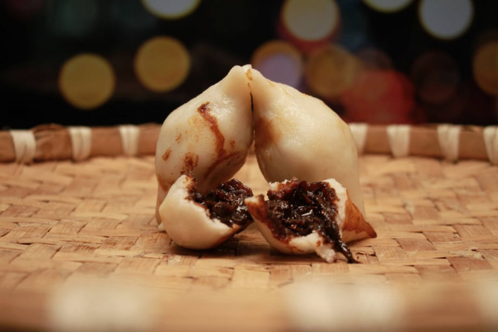
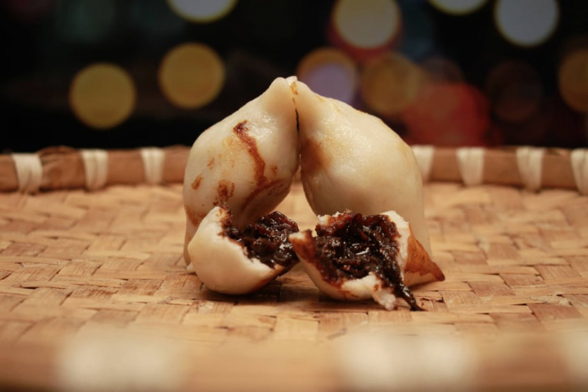

Himalayan Majesty
Nepal is home to eight of the world's 14 highest peaks, including Mount Everest, the highest point on Earth. The Himalayas offer breathtaking landscapes and trekking opportunities for adventure enthusiasts.


Trekking and Hiking
Nepal is a trekker's paradise with a variety of trails catering to different skill levels. The Annapurna Circuit, Everest Base Camp trek, and Langtang Valley trek are among the most popular routes.


Rich Cultural Heritage
Explore ancient cities, temples, and monasteries in places like Kathmandu, Bhaktapur, and Patan. The architecture and art reflect the country's diverse cultural and religious history.


Unique Wildlife
The country is home to diverse wildlife, including Bengal tigers, one-horned rhinoceroses, red pandas, and a variety of bird species. Chitwan National Park and Bardia National Park are popular for wildlife safaris.


Spiritual Retreat
Nepal is a deeply spiritual country with a blend of Hinduism and Buddhism. Visit sacred sites like Pashupatinath, Boudhanath, and Lumbini (the birthplace of Buddha) for a spiritual and serene experience.

Adventure Sports
Besides trekking, Nepal offers a range of adventure activities such as white-water rafting, paragliding, zip-lining, and mountain biking, making it a haven for thrill-seekers.


Cultural Festivals
Experience vibrant and colorful festivals throughout the year, such as Dashain, Tihar, and Holi. These celebrations provide a unique insight into Nepalese culture and traditions.


Local Cuisine
Enjoy the diverse and flavorful Nepalese cuisine, which includes momos (dumplings), dal bhat (lentil soup with rice), and a variety of curries. Don't forget to try the local tea, called chiya.
 


Cultural Diversity
Despite its small size, Nepal is incredibly diverse in terms of culture, language, and ethnicity. You can encounter a wide range of traditions and lifestyles as you travel through different regions.
Scenery
From the lush valleys and terraced fields to the snow-capped peaks of the Himalayas, Nepal offers a diverse range of stunning landscapes that will leave you in awe.

Warm Hospitality
Nepalese people are known for their warmth and hospitality. Visitors often feel a strong sense of welcome and friendliness in the local communities.
Affordable Travel
Nepal is known for being a budget-friendly destination, making it accessible to a wide range of travelers. Accommodation, food, and transportation are generally more affordable compared to many other tourist destinations.

Enchanting Villages
Venture into the remote villages of Nepal, where time seems to stand still and traditional lifestyles prevail. Experience the warm hospitality of the locals, immerse yourself in their unique customs, and savor the authentic flavors of their cuisine. Enchanting Villages in Nepal

Yoga and Meditation Retreats
Nepal is a great place to go for yoga and meditation retreats. There are many different centers and retreats to choose from, and you can find one that is perfect for your needs and interests.
Art and Handicraft Galleries
Kathmandu is home to numerous art galleries and studios showcasing traditional and contemporary Nepalese art. Explore these spaces to appreciate the country's artistic expressions.